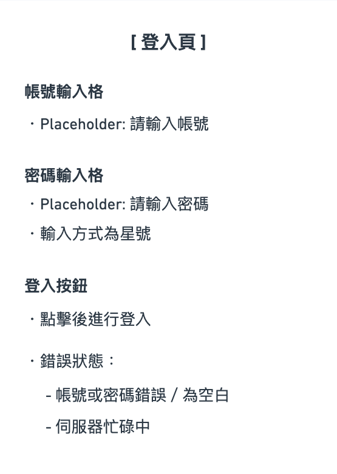
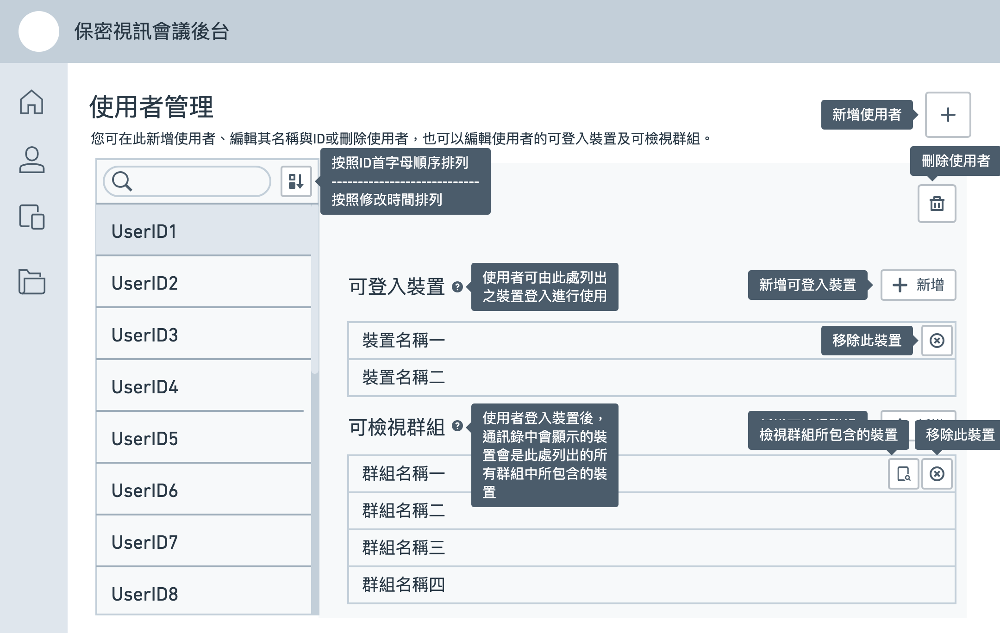
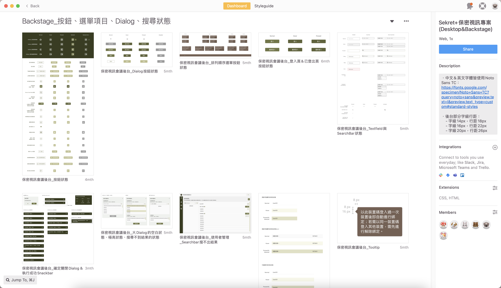

保密視訊會議專案
Secured Video Conference
專案背景
Background
這是一個特定機密客戶組織請求協助開發的專案，使用者是該組織內的成員；從專案經理帶回來的需求可知使用者皆有一定的使用數位產品的知識基礎；整個專案會包含一個前台系統及一個後台系統，前台系統讓組織內的一般使用者能夠發起視訊會議，而後台系統則對前台使用者使用視訊會議系統的情形進行一定程度的控制。
開發時程是2個月，內部分工上由團隊夥伴Sunny進行前台系統的設計，我負責後台系統的設計。
開發時程是2個月，內部分工上由團隊夥伴Sunny進行前台系統的設計，我負責後台系統的設計。
後台架構
Information Architecture
如何使只有IT人員可登入使用？
以登入頁面作為後台系統的初始頁，以後台使用者能或不能輸入正確的帳號密碼來讓系統驗證其是否為IT人員；若不能，則後台使用者被阻擋在登入頁中；若能，則後台使用者進入後台真正的首頁，可開始進行後台操作。
如何創建前台系統的登入資格？
從專案經理帶回來了一項資訊安全上的要求是「一個登入資格只能登入一台裝置使用」，因此會出現「一個登入資格與一台裝置之間的綁定關係」；在後台我將這個登入資格稱為「裝置帳戶」，於是流程為「裝置帳戶建立後，前台使用者得知該裝置帳戶的認證碼；前台使用者會被配發使用一台裝置後，使用該密碼登入該裝置，使該裝置與該認證碼的裝置帳戶形成綁定關係」。
有了「增」，就需要「刪」與「修」；因此我安排了一個「裝置帳戶管理頁」來使後台使用者進行「新增」、「編輯」及「刪除」的操作。

如何控制每個前台使用者作為會議發起人時所能夠邀請的人員名單？
決定每位前台使用者能邀請到誰、不能邀請到誰的方式，客戶考慮到這個規則必須是能完全貼合他們的使用情境、且也須是他們能容易完全理解的，因此在專案經理最後帶回了他們所希望的機制是使用者會被加入至群組裡，只有群組內的成員能夠互相邀請；每位使用者能夠被加入到多個群組，因此使用者能邀請與被邀請的對象是這些群組成員的聯集；系統中若有與自己完全沒有共同加入的群組，則自己無法邀請他、他也無法邀請自己。

在系統中「前台使用者＝裝置帳戶」，因此為了能讓後台使用者「控制每位前台使用者所被加入的群組」與「控制每個群組都有哪些前台使用者」，我在裝置帳戶管理頁中加入「加入與移出群組」的功能，及新增一個「群組管理頁」使後台使用者能新增與刪除群組，也可以在每個群組當中「加入與移出裝置帳戶」。
如何解決前台使用者無法登入、裝置遺失、及無法進行會議的問題？
1.無法登入
若前台使用者無法登入使用，可能有兩個原因：一個是後端所存取的裝置資料產生錯誤以致比對後發現不一致；另一個是客戶要求了一個機制是當裝置透過該裝置帳戶與後端進行請求時，前後端會分別計數其請求的次數；當前後端所計的數字差異超過50時，後端就會拒絕前端的所有請求，包含登入；該計數的數字被稱為CNT。
若是前者的情況，只需由後台使用者協助「解除裝置綁定」，讓後端所存取的資料能夠被重新存取，再重新綁定即可；若是後者的情況，則需要後台使用者點擊「重計CNT」，讓後端CNT數值直接成為其最近一次進行比對的前端CNT數值。而我把這兩個操作皆安排在「裝置帳戶管理頁」當中，因為這兩個操作皆需先「選擇是哪一個裝置帳戶」才能進行操作。
2.裝置遺失
若裝置遺失，代表該裝置所正登入的裝置帳戶有已被探知其密碼的可能，為了資安考量，必須假設這個裝置帳戶已經被懷有惡意的人掌握；因此該裝置帳戶必須被「停用」；而我同樣把這個操作安排在「裝置帳戶管理頁」中。
3.無法進行會議
因開發時程與伺服器量能考量，在目前的階段客戶只要求整個視訊系統只需要能同時進行三個會議即可；因此若前台使用者發現無法進行會議，有可能是因為三間會議室已經滿員；為了讓後台使用者能夠確認三間會議室的使用情形，我增加一個「視訊會議管理頁」，讓後台使用者能確認目前會議室是誰正在使用中，可透過其他管道確認會議室是否真的正在被使用，還是會議因有不正常關閉的情形，導致系統以為會議還在進行而使會議室空轉；為了後者的情況，我安排在「視訊會議管理頁」中能夠強制關閉會議。
若前台使用者無法登入使用，可能有兩個原因：一個是後端所存取的裝置資料產生錯誤以致比對後發現不一致；另一個是客戶要求了一個機制是當裝置透過該裝置帳戶與後端進行請求時，前後端會分別計數其請求的次數；當前後端所計的數字差異超過50時，後端就會拒絕前端的所有請求，包含登入；該計數的數字被稱為CNT。
若是前者的情況，只需由後台使用者協助「解除裝置綁定」，讓後端所存取的資料能夠被重新存取，再重新綁定即可；若是後者的情況，則需要後台使用者點擊「重計CNT」，讓後端CNT數值直接成為其最近一次進行比對的前端CNT數值。而我把這兩個操作皆安排在「裝置帳戶管理頁」當中，因為這兩個操作皆需先「選擇是哪一個裝置帳戶」才能進行操作。
2.裝置遺失
若裝置遺失，代表該裝置所正登入的裝置帳戶有已被探知其密碼的可能，為了資安考量，必須假設這個裝置帳戶已經被懷有惡意的人掌握；因此該裝置帳戶必須被「停用」；而我同樣把這個操作安排在「裝置帳戶管理頁」中。
3.無法進行會議
因開發時程與伺服器量能考量，在目前的階段客戶只要求整個視訊系統只需要能同時進行三個會議即可；因此若前台使用者發現無法進行會議，有可能是因為三間會議室已經滿員；為了讓後台使用者能夠確認三間會議室的使用情形，我增加一個「視訊會議管理頁」，讓後台使用者能確認目前會議室是誰正在使用中，可透過其他管道確認會議室是否真的正在被使用，還是會議因有不正常關閉的情形，導致系統以為會議還在進行而使會議室空轉；為了後者的情況，我安排在「視訊會議管理頁」中能夠強制關閉會議。
如何使用JSON檔進行資料備份與還原？
客戶希望能夠使用JSON檔的格式儲存當前系統內的「有哪些裝置帳戶、有哪些群組、群組內分別有哪些裝置帳戶」的資料，來讓後台使用者能夠備份及還原這些資料；考慮到首頁目前好像沒有其他功能，所以我將這兩個功能安排在首頁。
整體架構
使用元件進行任務操作
Conducting tasks using UI elements
當操作須先確定所要進行操作的對象
客戶希望能夠使用JSON檔的格式儲存當前系統內的「有哪些裝置帳戶、有哪些群組、群組內分別有哪些裝置帳戶」的資料，來讓後台使用者能夠備份及還原這些資料；考慮到首頁目前好像沒有其他功能，所以我將這兩個功能安排在首頁。
1. 希望能有一個列表直接列出所有能夠進行操作的選項。
2. 希望能輸入關鍵字來搜尋操作對象。
3. 希望能控制使用不同的原則進行選項的排列。
1. 希望能有一個列表直接列出所有能夠進行操作的選項。
2. 希望能輸入關鍵字來搜尋操作對象。
3. 希望能控制使用不同的原則進行選項的排列。
1.希望能有一個列表直接列出所有能夠進行操作的選項
若是有一個列表直接列出所有能夠進行操作的選項，當使用者發現了其所欲進行操作的對象，直覺上應該會是點擊列表中該選項；因此實際上這會是一個「由按鈕形成的長列表」。
2.希望能輸入關鍵字來搜尋操作對象
由於所有可供選擇的選項皆已經被列出來，以關鍵字進行搜尋時應就不需在搜尋結果出來後進入一個新的頁面，而是直接在關鍵字輸入時，即直接實時顯示搜尋結果。
3.希望能控制使用不同的原則進行選項的排列
這個需求考量到情境的是例如「我現在想要進行編輯的裝置帳戶，是我剛剛創立好的裝置帳戶」的情況；如果能夠直接讓整個列表以建立時間的先後順序排列，我認為操作會比較直覺。
操作體驗準則
每個頁面中所需要能執行的任務如下圖所示：
我希望這些任務在執行的流程上能有以下這些特性：
- 每項要達成的任務盡可能在不切換頁面的前提下完成。
- 使用「按鈕」來讓使用者開啟其所要進行的操作的流程。
- 若使用者不需進行其他輸入，使用「Dialog」進行操作確認。
- 若使用者需要進行其他輸入，也使用「Dialog」進行輸入及操作確認。
- 操作被執行後，使用「Snackbar」來給予使用者『操作已被執行』的提示。
如此便能確定每項任務的操作中所需要使用到的UI元件操作順序如下表所示：
錯誤情境
Error Scenarios
以上列出的操作中，只要「需要由使用者進行輸入」的部分，都需要考慮錯誤情境，包含JSON檔的內容、在輸入格中進行輸入、進行點擊選擇等等；各個情境所需考慮的錯誤情境及解決方式如下表所示：
Lo-Fi Wireframes
我根據以上所有任務所需使用的元件，在Whimsical上以文字方式列出每個頁面及Dialog中分別需要有哪些元件（備註：以上所述皆為最終版本之內容，專案進行當中陸續有進行更動，因此以下呈現的文字版wireframe與以上內容稍有差異）：

接著我同樣使用Whimsical將所有元件在頁面上進行配置；其中，為了讓畫面上不是一眼掃過有太多的文字說明，我在許多地方使用Tooltip，讓大部分按鈕可以預設只顯示icon圖像；並且在需要解釋功能的部分也使用Tooltip，在後台使用者用滑鼠hover至「i」符號的icon上時才顯示說明文字。


Hi-Fi Wireframes
本專案的主題色系及基本視覺的Guideline由負責設計前台的團隊夥伴Sunny完成；而我依據她設計的Guideline繪製出以下的Hi-Fi Wireframes：

與工程師的合作
Cooperating with Developers
為了減少工程師與我來回反覆確認的次數以加快開發速度，在Zeplin上我為每一個上傳的頁面加上了頁面說明，以及每個頁面上的元件的互動效果說明；另外，一些動態的互動效果，我也使用Adobe
XD製作效果影片來呈現。-Fi Wireframes：
Zeplin上的開發說明

用於說明動畫效果的影片
需求追加
Additional demand
Token的時效控制
專案進行到中後期階段時,專案夥伴也帶回了客戶希望可以在後台控制一個在程式上能控管登入憑證的時效長度的需求;由於這個控制項目會影響到所有的裝置帳戶,而非每個裝置帳戶都能夠單獨設置不同的時效,因此我將能叫出此控制Dialog的按鈕放置在裝置帳戶管理頁的標題區域中「新增裝置帳戶」的按鈕右方。
XD製作效果影片來呈現。
能接觸到該裝置帳戶的裝置帳戶總覽
這個項目與其說是需求追加,更像是PM提醒了這個專案中最重要的事情是要能「控管每位使用者所能邀請至視訊會議的人員」,以至於發現可能必須增加的功能。
原本在裝置帳戶管理頁的右方詳細資訊區域,為了方便使用者能確認該裝置帳戶中所列出其所加入著的群組中都有哪些群組,在每一個被列出的群組中,我都附上了一個點下後會跳出顯示了該群組有哪些裝置的Dialog的按鈕;如果只有這樣的話,意味著如果使用者希望能看到「該裝置帳戶總共能被哪些其他的裝置帳戶給邀請至視訊會議」,就必須一個一個按鈕點開來查看,是一個非常不方便的方式。因此我決定在該群組列表區域的右上方,再新增一個按鈕,點下後會一次顯示所有有被包含在下方所列出的群組當中的裝置帳戶。
原本在裝置帳戶管理頁的右方詳細資訊區域,為了方便使用者能確認該裝置帳戶中所列出其所加入著的群組中都有哪些群組,在每一個被列出的群組中,我都附上了一個點下後會跳出顯示了該群組有哪些裝置的Dialog的按鈕;如果只有這樣的話,意味著如果使用者希望能看到「該裝置帳戶總共能被哪些其他的裝置帳戶給邀請至視訊會議」,就必須一個一個按鈕點開來查看,是一個非常不方便的方式。因此我決定在該群組列表區域的右上方,再新增一個按鈕,點下後會一次顯示所有有被包含在下方所列出的群組當中的裝置帳戶。
我認為能夠再做得更好的地方
Things I think could be done better
顯示「創建時間」與「修改時間」
為了能夠讓剛新增的裝置或群組被顯示於最顯眼的位置,我提出在列表排列方式中新增一個「依修改時間排列」的要求,如此使用者便可在新增完一裝置或群組時,選擇將列表的排列方式改為「依修改時間排列」,讓剛新增的裝置或群組顯示於最上方。
然而無論是在列表中或是裝置或群組的詳細資訊中,我皆沒有要求要顯示「創建時間」或「修改時間」,這有一定的程度可能使得使用者感到無從理解修改時間導致的排列順序先後是如何決定。
當時之所以沒有特別提出這個要求,可能主要是兩個原因:一個是因為客戶並沒有特別要求在後台所進行的操作需要有詳細的紀錄,另一個是我知道若要新增這樣的顯示,會需要後端工程師開API與前端工程師呼叫API,並讓系統增加負荷(雖然應該並不大)。
但無論如何這並不該妨礙我至少提出來,與工程師一起討論,衡量顯示與不顯示創建時間與修改時間的利弊。
然而無論是在列表中或是裝置或群組的詳細資訊中,我皆沒有要求要顯示「創建時間」或「修改時間」,這有一定的程度可能使得使用者感到無從理解修改時間導致的排列順序先後是如何決定。
當時之所以沒有特別提出這個要求,可能主要是兩個原因:一個是因為客戶並沒有特別要求在後台所進行的操作需要有詳細的紀錄,另一個是我知道若要新增這樣的顯示,會需要後端工程師開API與前端工程師呼叫API,並讓系統增加負荷(雖然應該並不大)。
但無論如何這並不該妨礙我至少提出來,與工程師一起討論,衡量顯示與不顯示創建時間與修改時間的利弊。
第二層Dialog
在三個管理頁中皆主要是用Dialog來確認使用者想進行的操作,或進行文字或數值的修改;當Dialog的類型為後者時,在設計上我在使用者不做修改而關閉Dialog時加上了第二層的Dialog,原意是避免在第一層Dialog進行的編輯因誤觸關閉Dialog而丟失;然而,第二層Dialog的設計在實作上雖然可以實現,但若在第二層Dialog被叫出的狀態下將瀏覽器拉大或拉小,第二層Dialog的位置就會跑版。
因為只要不特別去拉瀏覽器就不會發現跑版的問題,所以最後成品仍然保留了第二層Dialog的設計;然而我自己在測試時,會覺得比起「在第一層Dialog中輸入的內容被第二層Dialog給拯救」,更多的時候是「想要直接關掉第一層Dialog時,因第二層Dialog而感到礙事」;因此未來若再次有類似的設計,我會更謹慎地衡量放上第二層Dialog的必要性。
因為只要不特別去拉瀏覽器就不會發現跑版的問題,所以最後成品仍然保留了第二層Dialog的設計;然而我自己在測試時,會覺得比起「在第一層Dialog中輸入的內容被第二層Dialog給拯救」,更多的時候是「想要直接關掉第一層Dialog時,因第二層Dialog而感到礙事」;因此未來若再次有類似的設計,我會更謹慎地衡量放上第二層Dialog的必要性。